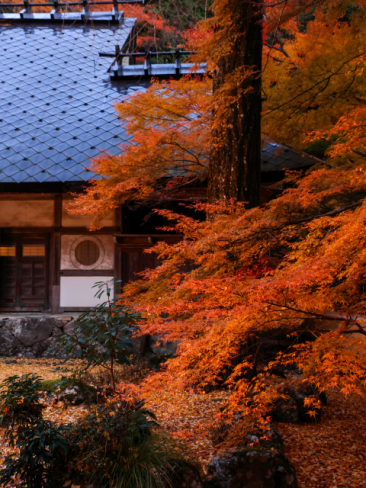
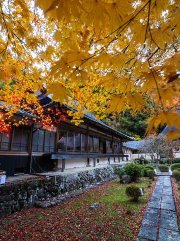
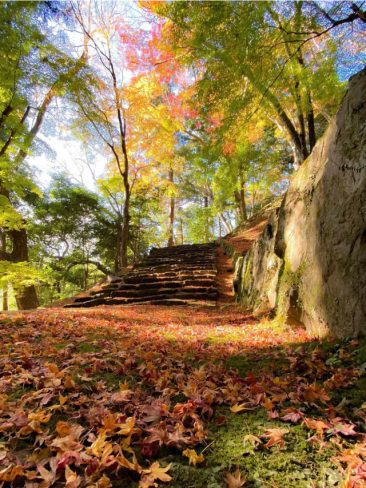
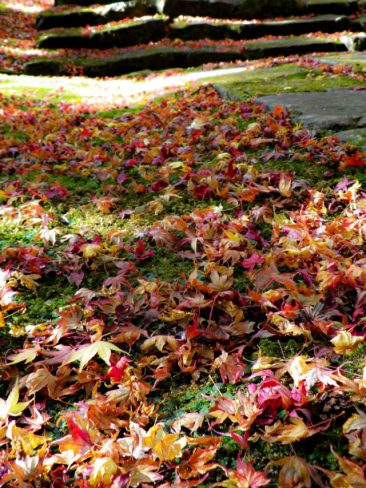
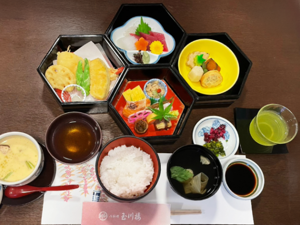
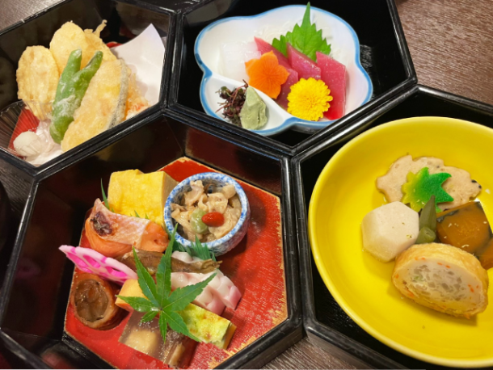

最新の情報は 公式サイトのツアーページ をご覧ください。
紅葉の亀岡、心ほどける秋旅。法常寺で出会う、特別なひととき
※大人・子ども同額
※穴太寺・神蔵寺の特別拝観料は旅行代金に含まれておりません。各寺院にて拝観料 1,000円を、当日現地でお支払いください。
※法常寺での特別公開、お抹茶・お菓子、到着後のご住職のお話は旅行代金に含まれています。
※紅葉の見頃は気候により前後する場合がございます。あらかじめご了承ください。
※寺社の境内には階段や舗装されていない場所がございます。歩きやすい靴・服装でのご参加をおすすめします。
※1名様からご予約いただけますが6名様以上で運行します。
| 現在のお申込み状況(最少催行人数6名) |
※最新のお申込み状況はお問い合わせください
秋色に染まる亀岡へ。
穴太寺、神蔵寺など、秋の美しい景色に彩られる古刹をめぐりながら、普段とはひと味違う亀岡の秋を訪ねます。
穴太寺・神蔵寺では、この時期ならではの特別公開を拝観。
紅葉に包まれた境内を歩きながら、それぞれのお寺や神社が持つ歴史や趣にも触れていただきます。
昼食は、亀岡の老舗「御料理 玉川楼」へ。
紅葉を楽しんだあとは、ゆっくりとお食事をいただき、午後の旅へと向かいます。
そして、旅のハイライトは法常寺。
法常寺を訪れるこの特別な旅は、今年で3回目。
今回も特別なご縁をいただき、到着後はお抹茶とお菓子をいただきながら、ご住職のお話を伺うひとときをご用意しました。
お抹茶を楽しんだあとは、自由に境内を拝観。
本堂と方丈には案内の方がおられ、法常寺の歴史や見どころについてお話を伺うこともできます。
一般公開での拝観だけでは味わえない、ツアーならではのおもてなし。
ご住職のお話に耳を傾け、お抹茶をいただき、そして境内をゆっくりとめぐる――。
慌ただしく名所をめぐるだけではない、心ほどける秋の夜をお楽しみください。
紅葉を愛で、特別公開に触れ、老舗で昼食をいただき、最後は法常寺でゆっくりと過ごす。
この秋は、少しだけ贅沢に。大人のための、特別な亀岡の秋旅へ出かけませんか。
おすすめポイント
| 紅葉の名所をゆったりめぐる、秋の亀岡旅 穴太寺・神蔵寺など、秋色に染まる古刹をタクシーで効率よく訪ねます。 この時期だけの特別公開を楽しめるのが魅力！ 普段とは違う表情を見せる寺社をめぐり、特別な秋のひとときをお楽しみいただけます。 |
| ツアーならではのおもてなし 法常寺では、ご住職のご案内に加え、お抹茶とお菓子も楽しめる、ツアーならではの特別な時間をご用意しています。 |
| おひとり様でのご参加も大歓迎！ タクシーでラクラク移動できるので、「自分のための秋旅」を気軽に楽しみたい方にもおすすめです。 |
行程
| 時間 | 場所 |
| 9:00 | 京都駅八条口MKタクシーのりば |
| 9:45 | 穴太寺 |
| 10:40 | 神蔵寺 |
| 11:40 | 御料理 玉川楼 |
| 13:00 | 大梅山 法常寺 |
| 15:00 | 保津川あられ本舗 霰館（あられかん） |
| 16:30頃 | 京都駅 |
※渋滞等で、行程の入替や、予定通りの滞在時間をお取りすることができない場合がございます。予めご了承ください。
※穴太寺・神蔵寺の特別拝観料（各1,000円）は当日お支払いをお願いいたします。
※参道には階段が多くございます。歩きやすい服装・靴でのご参加をおすすめします。
◆気象状況により紅葉の見ごろは前後する場合があります。
法常寺


▲ 写真提供：瀧川潤一朗様
-

-

御料理 玉川楼


| MKトラベルスタッフによる「御料理 玉川楼」レポ |
| ・三段重が運ばれてきてビックリ、少し遅れて登場した四段目は揚げたての天ぷらでテンション上がりました ・お重のふたを開けると彩り豊かなお料理の数々に目も楽しめました！ ・ボリューミーでお腹も大満足！ ・炊き合わせのカボチャが25年の人生で一番おいしいカボチャでした ・おすまし、茶わん蒸しのお出汁に癒されました |
【MKトラベルLINE公式アカウント】
MKトラベルの新規ツアー情報をLINEでお届けいたします

【各SNSでも京都の情報やツアー情報をお届けしています】


旅行条件
| ツアー番号 | T284MK |
| 出発地 | 京都市内 |
| 添乗員／ガイド | 添乗員：なし（乗務員がその業務を代行いたします） |
| 食事 | 1回 |
| 最少催行人数 | 6名 |
お申込みについてのご注意
※最少催行人数は6名様です。最少催行人員に満たない場合は、旅行の実施を取りやめることがあります。出発の3日前にその旨をご連絡し、お客様から当社がお預かりしている旅行費用の全額をお返しいたします。
※旅行条件・旅行代金は、2026年9月1日現在を基準としています。
※行程および帰着時間は交通事情などにより変更になる場合があります。
※お申込みの前に弊社の募集型企画旅行規約をご確認ください。
よくある質問
Q.1名ですが、申し込みできますか？
A.はい。お一人参加の方もたくさんいらっしゃいますので、お気軽にお申し込みください。
Q.参加したかったけど、日程が合いません／終了していました
A.貸切で再現できる場合もございますのでご相談ください。お問合せフォームはこちら
Q. 法常寺とはどんなお寺ですか？
A.後水尾天皇ゆかりの寺院で、歴代の天皇より賜った多数の古文書や美術品の一部を公開されています。
京都の中心部から離れた場所にあり、静けさのなかで初夏は新緑、秋は紅葉が楽しめます。
庭園は多くの紅葉が植えられており、京都府指定名勝となっております。
（通常は庭園・本堂の拝観は事前予約が必要です）
Q. 京都駅から法常寺まではどのくらいかかりますか？
A.車で60～75分程度です。公共交通機関を利用の場合はJR・バスを乗り継いで90分程度です。
徒歩での移動をなくしたい方、乗り継ぎ時に発生する待ち時間をなくしたい方はぜひ本ツアーをご利用ください。
Q. 境内ではどのくらい歩きますか？
A.京都駅から法常寺の山門前まではタクシーにてお送りさせていただきますが、到着後は階段や坂の移動がございますので、歩きやすい靴でのご参加を推奨しております。
Q. 帰りも京都駅まで送ってもらえますか？
A.はい、お帰りの際もタクシーにて京都駅までお送りいたします。16:30ごろの帰着を予定しております。
＜お問合せフォームはこちら▶＞
＜MKトラベルTOPはこちら▶＞
＜おすすめツアー一覧はこちら▶＞
お支払い方法
【お電話・ご来店でのご予約の場合】
・クレジットカード決済
・コンビニ決済【WEBシステムよりご予約の場合】
・クレジットカード決済
・コンビニ決済
・ＴＡＣＰＯ
お支払方法詳細はこちら
お客様のご都合でご予約をキャンセルされる場合は、すみやかに下記お問合せ先までご連絡ください。
キャンセル料
11日目に当たる日以前
無料
10日目に当たる日以降
20%
7日目に当たる日以降
30%
旅行開始日の前日
40%
旅行開始日の当日
50%
旅行開始後又は無連絡
100%